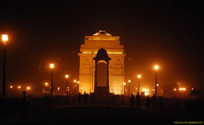
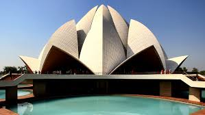
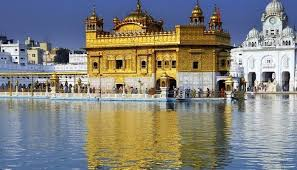
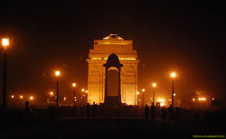
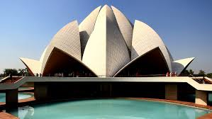
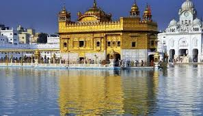

From the 4th century BC for around 1,000 years, India was the only source of diamonds in the world. The original diamonds were found in the Krishna River Delta.In the 18th century, more diamond deposits were discovered in Brazil, and soon after, in South Africa, adding to the market of diamonds.
Did you Know the 70% of world’s spices come from India.According to Indian food theory, there are six different tastes: sweet, sour, salty, spicy, bitter and astringent.
Be it because of religious reasons or personal choices or both, around 20-40% of Indians are vegetarians, making it the largest vegetarian-friendly country in the world.
With around 125 million speakers (about 10% of the population), it is second only to the USA, which currently has more than 300 million English speakers.
The game was initially invented to teach young children about morals and karma. It was later commercialised and has become one of the world’s most popular board games.
With 7,172 stations, the Indian rail network is the largest in Asia – carrying a whopping 23 million passengers daily in 12, 617 trains
Due to its close proximity to the Bay of Bengal, Mawsynram in Meghalaya state, holds the record with with 11,873 millimetres of rain annually!